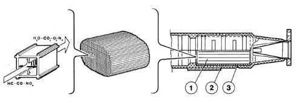

EXHAUST EMISSION CONTROL SYSTEM
- Path
- Descriptions > 10 ENGINE > 1080 EXHAUST EMISSION CONTROL SYSTEM > 1080B EXHAUST EMISSION CONTROL SYSTEM > EXHAUST EMISSION CONTROL SYSTEM
- Kind
- system description
- Applies to
- engines: 2.0 16V; all production periods; only with equipment: Methane and GPL
- Interactive page
- https://sloeber94.github.io/elrnDB-fDct/en/#/244000415
Applies to: engines: 2.0 16V; all production periods
CONSTRUCTION SPECIFICATIONS
CATALYTIC SILENCER
